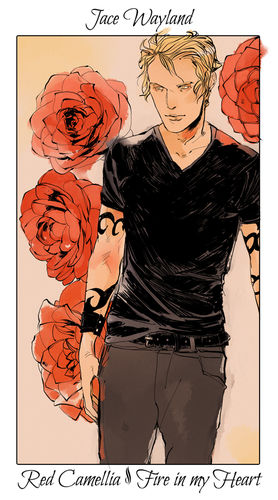
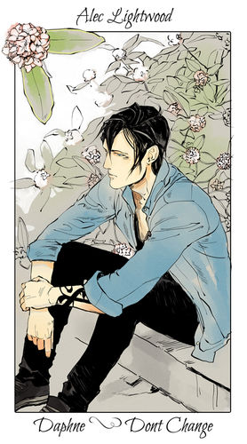
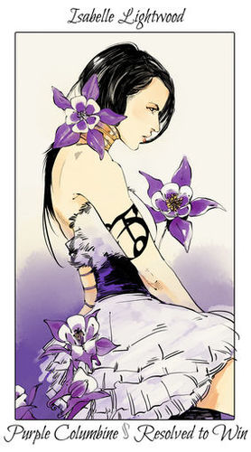
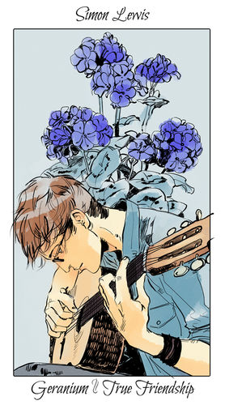
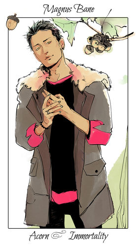
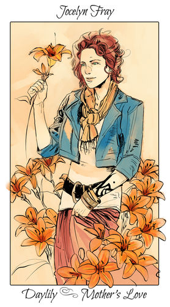
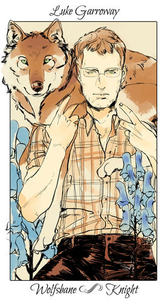
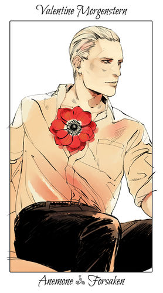
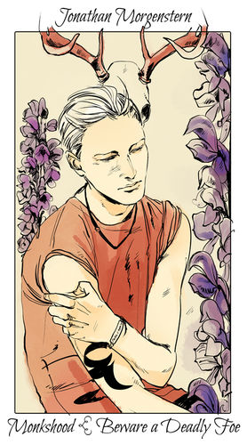

Protagonista de 16 anos que mora em Brooklyn e descobre ser uma Caçadora de Sombras. Melhor amiga de Simon Lewis e filha de Jocelyn Fray e Valentine Morgenstern.

Jonathan 'Jace' Christopher Wayland/ Morgenstern/ Lightwood/ Herondale
Protagonista de 17 anos que é um Caçador de Sombras.É considerado o melhor Caçador de Sombras de seu tempo, foi morar na casa de Alec Lightwood e Isabelle Lightwood desde de criança e são considerados como irmãos.

Alexander 'Alec' Gideon Lightwood
Irmão de Isabelle e Max Lightwood e filho de Maryse e Robert Lightwood. Vive no Instituto e é irmão mais velho de Isabelle e Max, sendo também irmão adotivo e parabatai de Jace Lightwood Herondale.

Isabelle Sophia 'Izzy' Lightwood
É uma Caçadora de Sombras atualmente sob a Conclave de Nova York. Ela é a única filha de Robert e Maryse Lightwood, irmã de Alec e Max, e a irmã adotiva de Jace.

Simon Lewis
Melhor amigo de Clary Fray.Inicialmente apaixonado por Clary, apesar de não falar a ela. Ele faz parte de uma banda de vive mudando de nome. Pode ser considerado nerd e gosta muito de jogos.

Magnus Bane
O magnífico feiticeiro do Brooklyn, que frequentemente ajuda os protagonistas. É filho do príncipe do inferno Asmodeus. Tendo mais de quatro séculos de idade, a sua vida, desde então, está entrelaçada com vários Caçadores de Sombras e Seres do Submundo ao longo dos séculos.

Jocelyn Fray/Fairchild
Mãe de Clary Fray. Foi caçadora de sombras. Abdicou da função quando fugiu grávida para Nova York em busca de uma vida mundana a fim de proteger a filha(Clary) contra o pai Valentine.

Luke Garroway
Ele é um lobisomem que foi inicialmente um Caçador de Sombras e um membro do Ciclo, antes de ser traído por seu parabatai, Valentim Morgenstern.

Valentim Morgenstern
Foi o marido de Jocelyn Fray e o pai de Sebastian e Clary. Um defensor contrário aos Seres do Submundo, Valentim liderou o Ciclo com a meta principal de livrar o mundo deles. Depois de seu fracasso inicial, seu novo objetivo se tornou a reforma dos Caçadores de Sombras como um todo.

Jonathan Christopher Morgenstern ou Sebastian Verlac
É o filho de Valentim Morgenstern e Jocelyn Fray e o irmão mais velho de Clary Fray. Como resultado de experiências feitas nele por seu pai, Sebastian é um Caçador de Sombras nascido com sangue de demônio.